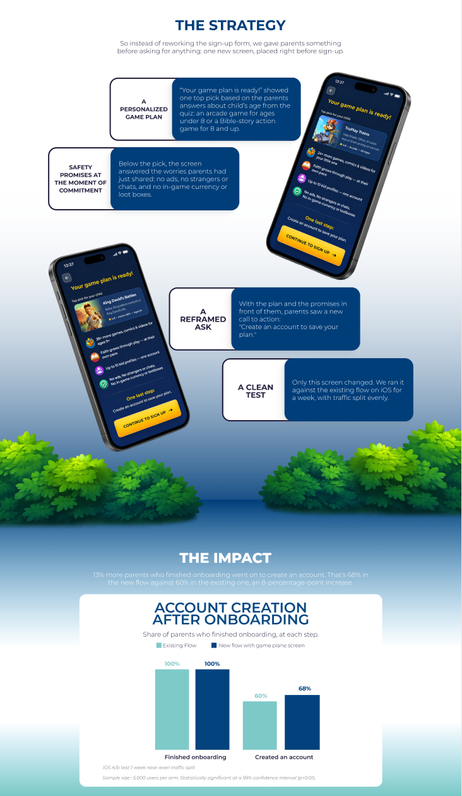

Explain the challenge
Establish the context before introducing the test and its proposed solution.
A conversion-focused case study presented through thoughtful visual hierarchy and editorial web design.
My design contribution to an Admiral Media case-study presentation for TruPlay. This independently hosted page documents my draft rather than reproducing the agency's final animated website.
These images were exported directly from my Figma draft and are now hosted inside this GitHub repository. They are not synthetic mockups and will not update when Admiral Media changes its website.

Establish the context before introducing the test and its proposed solution.
Combine editorial composition, supporting artwork and clear hierarchy to guide the story.
Give the agency's experiment and reported results a readable visual structure without claiming I ran the CRO test.
Exported from my actual Figma draft, showing how I arranged the narrative and supporting artwork. The agency's final published page later featured animation, palette adjustments and other changes.
Open the original Figma draft ↗
I contributed the case study's Figma editorial design draft. Admiral Media's broader client relationship, research, experiment, CRO strategy and reported conversion results are not represented as outcomes I independently produced or verified.
The agency's published version may differ in color, layout, animation or features. This page intentionally presents my original design draft, not a live mirror or a claim of pixel-perfect parity. The official agency publication is linked for context only.